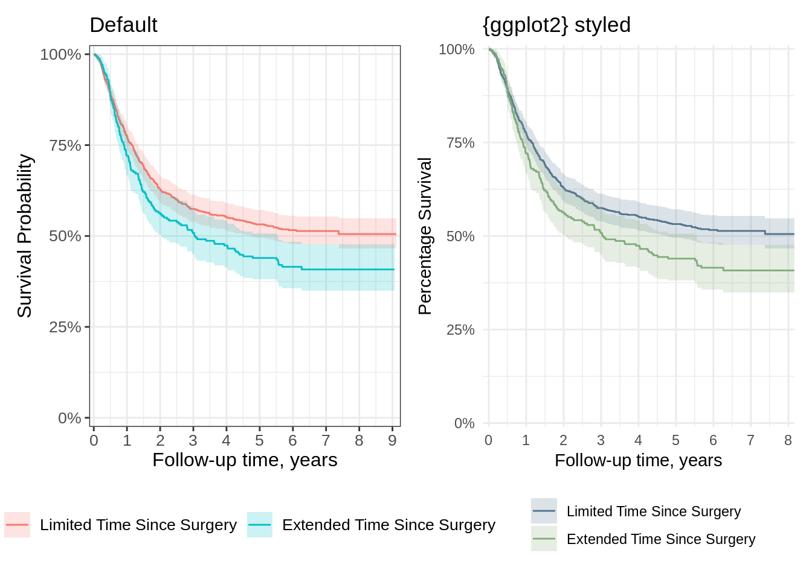
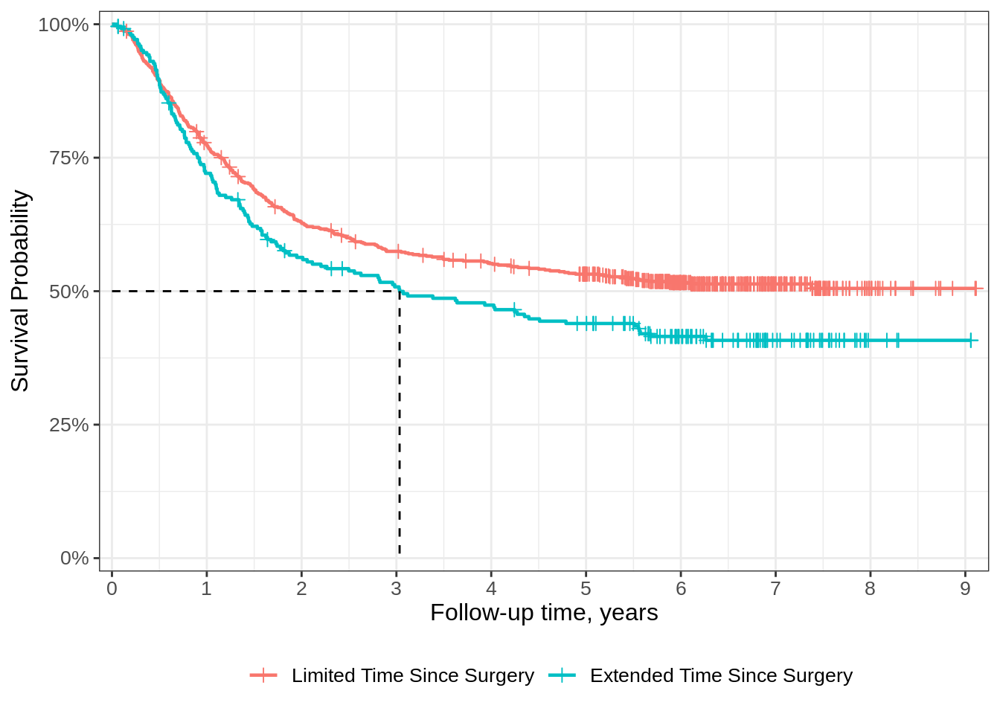
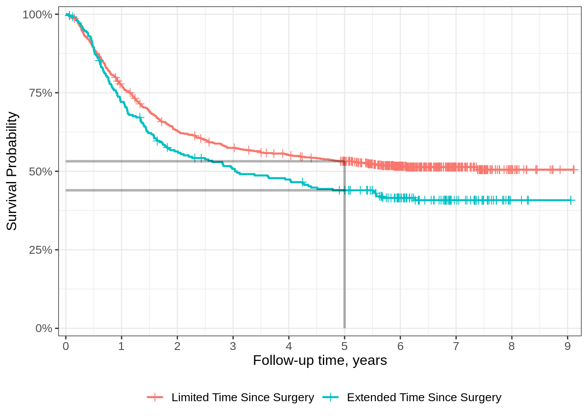

gg_default <-
survfit2(Surv(time, status) ~ surg, data = df_colon) |>
ggsurvfit() +
add_confidence_interval() +
scale_ggsurvfit() +
labs(title = "Default")
gg_defaultAdditional examples
Default and styled modifications with ggplot2
{ggsurvfit} defaults
{ggplot2} styled
gg_styled <-
gg_default +
coord_cartesian(xlim = c(0, 8)) +
scale_y_continuous(
limits = c(0, 1),
labels = scales::percent,
expand = c(0.01, 0)
) +
scale_x_continuous(breaks = 0:9, expand = c(0.02, 0)) +
scale_color_manual(values = c('#54738E', '#82AC7C')) +
scale_fill_manual(values = c('#54738E', '#82AC7C')) +
theme_minimal() +
theme(legend.position = "bottom") +
guides(color = guide_legend(ncol = 1)) +
labs(
title = "{ggplot2} styled",
y = "Percentage Survival"
)Scale for y is already present.
Adding another scale for y, which will replace the existing scale.
Scale for x is already present.
Adding another scale for x, which will replace the existing scale.Side-by-side
library(patchwork)
gg_default + gg_styled
Risk tables
{ggsurvfit} defaults
survfit2(Surv(time, status) ~ surg, data = df_colon) |>
ggsurvfit() +
add_risktable()Group by statistic or strata
ggrisktable <-
survfit2(Surv(time, status) ~ surg, data = df_colon) |>
ggsurvfit() +
scale_ggsurvfit() +
add_risktable(risktable_group = "risktable_stats")
ggrisktableColour encoding strata
ggrisktable +
add_risktable_strata_symbol(symbol = "\U25CF", size = 10)Customizing the risktable statistics
survfit2(Surv(time, status) ~ surg, data = df_colon) |>
ggsurvfit() +
add_risktable(risktable_stats = "{n.risk} ({cum.event})") Quantiles
Median summary
survfit2(Surv(time, status) ~ surg, data = df_colon) |>
ggsurvfit(linewidth = 0.8) +
add_censor_mark() +
add_quantile(y_value = 0.5) +
scale_ggsurvfit()
At a given timepoint
survfit2(Surv(time, status) ~ surg, data = df_colon) |>
ggsurvfit(linewidth = 0.8) +
add_censor_mark() +
add_quantile(x_value = 5, linetype = "solid",
linewidth = 1.0, alpha = 0.3) +
scale_ggsurvfit()